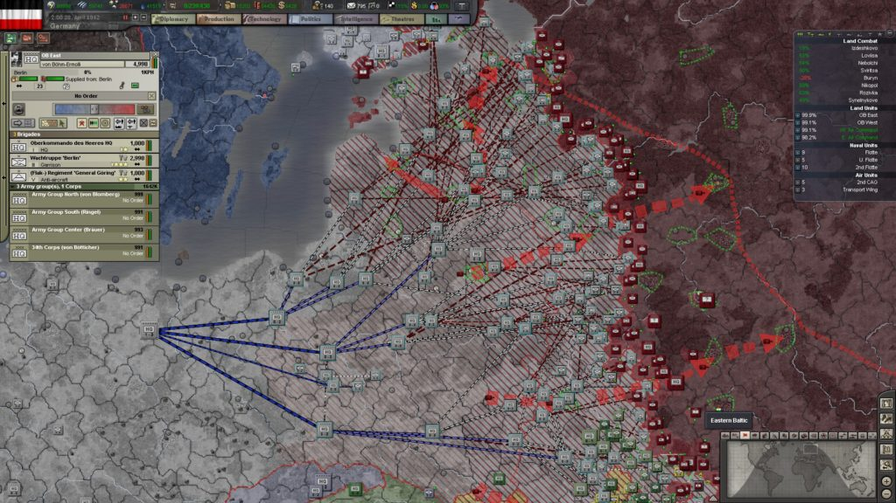
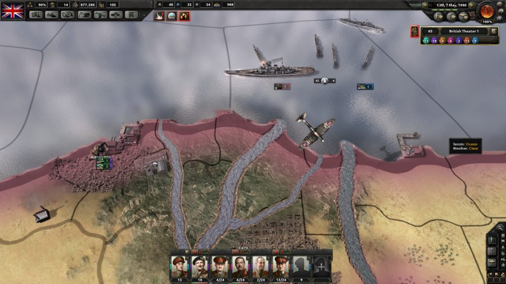
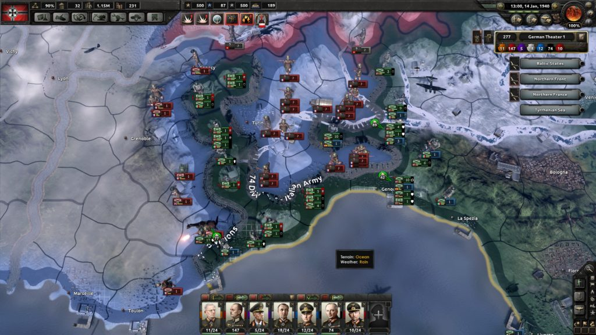
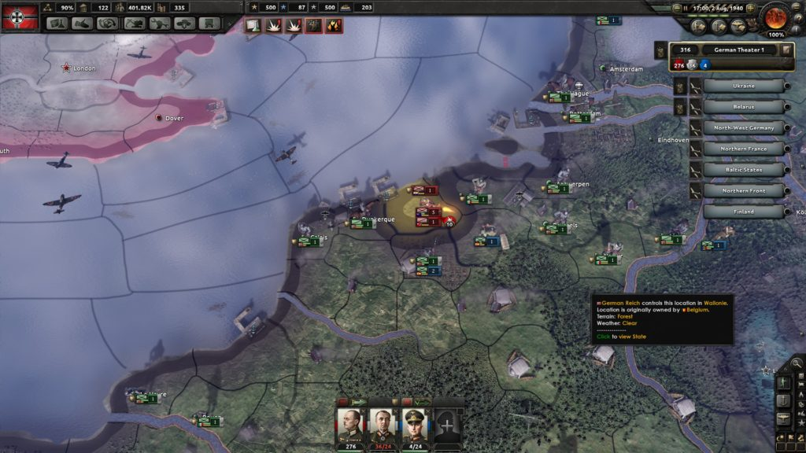

Hearts of Iron
published 19th Nov 2016
20th May, 1941. Soviet infantry and armour have rolled into Finland throughout March and April, seizing the capital Helsinki, and advancing on the coast. They reach it, splitting the country in two - north and south. But the air is thick with aircraft and parachutes. Landing craft hit the beaches. Reinforcements have arrived.
Elite German paratroopers land in the north, and marines in the south. Surrounding the overextended Soviet troops, they link up with the remaining Finnish forces and begin pushing back. Most of the Soviets surrender, the rest scramble backwards to form a defensive line. German and Finnish forces recapture Helsinki to cheering crowds. They push onwards to the front. The war rolls on. This is just a sideshow.
This never really happened (Finland saw heavy fighting in WW2 - but Helsinki was never occupied, one of only a few European capitals to hold that distinction) but the "Hearts of Iron" series by Paradox Interactive will let you create these sorts of fake World War Two memories for yourself. But realizing the war in such detail - the entire world map is playable, using authentic planes, troops, tanks and more - naturally brings into question what actions you should be taking in a World War 2 game, and some of the answers may prove more than a little irritating and confusing.
First, some background. I've only had enough experience to really discuss two Hearts of Iron games, the third and fourth instalments, as even one is enough of a time investment. In both, you take command of a nation, any nation, from South Africa to Sweden, the United States of America to Albania, and control its industry, politics, technological development, foreign affairs, military forces and more. Much of this control is simplified, with only vague directions ("Do you wish to exert influence on Chile?"), but others are specific (ordering "7. Marine Division to attack Salo, Finland").
Play begins on the 1st of January 1936, as you begin to gear up your nation for the biggest conflict in human history. This being a video game, interactivity is key. You choose: Order construction of vast battleships, or decide to focus your efforts on tank technology? How many panzer divisions? Do you want Close Air Support? Strategic Bombers?
You can run up vast production orders, enact tighter conscription laws, and plan military campaigns as you react to current events. Much of the early section of the game involves Germany in the position of power, and other nations are willing to submit to demands made by Hitler. Germany allows for a fast, aggressive and expansionist style of play, as you wage rapid battles and roll forces into neutral countries, seizing resources and territory for your nation.
You'll need it, because the challenges quickly begin to mount up, and the Axis start to lose momentum. If you decide to follow historical precedent, your invasion of the Soviet Union will start with a bang, as you inflict defeat after defeat on the Soviets. But they'll slowly build and build, learn and adapt. Your forces become more spread out and less well-supplied. Every river starts to feel like a canyon, every forest a maze. The Soviets counter-attack, and begin to roll you back. The Allies land in France, and your outnumbered forces are forced to retreat. Counter-attacks fail, defence lines are breached. The war becomes a rout, and usually for me wraps up in around 1943.
{kind=link}
Hearts of Iron 3 at it's most complex. This screenshot shows an ultimately successful invasion of Russia by Axis forces. Note the chain of command lines.
That is, of course, if you choose to follow the historical path. You could choose to honour the Molotov-Ribbentrop Pact and not invade the Soviet Union. You could instead attempt Operation Sea Lion, the planned invasion of the United Kingdom. Or capture Egypt, and mount an invasion of the British Raj in India, then use that as a springboard to support your Japanese allies. When you realize the scope and detail of what's on offer, it's much more impressive than most video games. But actually playing it can feel rather different.
Hearts of Iron 3 is an intimidating game. It seems to ignore the interests of the player or even actively resent them. Take commanding troops as an example. Each unit is placed within a hierarchy, known as the "Order of Battle". Troops are assembled into divisions, which operate under Corps, in turn part of Armies and so on, with a large wartime military featuring dozens of armies. The game encourages you to manage these even down to the corps level, which necessitates hundreds of clicks to organise appropriate commanders, set up HQ units, and ensure that everything is placed optimally for easier command later on. Failure to do so and units are considered out of range, complete with an ugly red line and penalties to combat performance. This tedium vastly outweighs any enjoyment in promoting well performing commanders, or generally any sense that most of these actions are having a meaningful impact.
Even aside from the OOB, each division must be manually moved from area to area. The Battle of Moscow is equally important to the game as a small skirmish in far-flung territory. These hundreds of units require hundreds of clicks, and generally ensures I can only concentrate for an hour or so at a time, before the performance of the German army begins to drop rapidly.
Naval and Air units don't have an OOB but they do have more specialised missions - transport planes can resupply areas for instance, so if your troops get encircled you have at least a small hope of keep them fighting. Of course just like the real troops at Stalingrad, they're probably going to have no hope in hell unless you've prepared, planned and built for this situation.
Some of those moments provide the most excitement of the game. The carefully planned offensive is disrupted, the impregnable fortress is overrun, and suddenly the map looks very different. Having these kinds of realisations, your failure to prepare and the mad scramble to do something to fix the situation, is a kind of experience most games don't have the depth of systems or willingness to provide.
This is expanded by the sheer number of fronts and geographies that are on offer. Troops can be shuttled between Poland, France, Greece, Finland, Russia, North Africa, back to France and then Germany all in one play-through of the game. The mess of numbers start to sink in - you choose favoured corps and commanders, prioritize the best equipment for them, assign them to your most important tasks.
The game pulls no punches, makes you invest in every victory, it demands you prepare and consider while also keeping flexible. In short, when it works, you get a taste of WW2 command.
Playing the game makes me, in a strange way, more respectful of the historical figures involved. It's all very well to pore over a detailed, accurate map of their mistakes from a comfy chair, it's another to experience a sense of the scale of their task, and their responsibilities. Pulling off something like D-Day in Hearts of Iron is a very difficult exercise.
As if knowing some of the task at hand, the game does offer to let you give over control of certain systems to the computer, but only the trade system is simple and tangential enough for the Artificial Intelligence (AI) of the game to control.
Playing HoI3 then, is a certain kind of experience. HoI3 is a grim game. Its interface and map are dark, it's sound effects minimal. If you play with period-accurate unit tokens (and you should, for the complete "I'm a WW2 Commander, honest!" experience) the troops you command consist of strange symbols and coloured bars. The music does most of the heavy lifting to make your actions feel dramatic and impressive, but overall the game feels dour, precise and ‘important'.
HoI3 is a game obsessed with mechanical complexity and detail orientated thinking. The OOB, manual unit control and mostly-terrible automation means it wants you to play every move. It wants to be about the grand scale, but to have small corps level tactics as well. The two aims don't mesh well together, and when you add the complexity of the systems involved the experience is often overwhelming. But when it all comes together, when you select your main army HQ and it dutifully reports "1.6 million men selected", when you pull off a successful invasion of Russia, when you parachute in troops to save Finland, when you execute a successful landing in Italy, or force the Axis from North Africa, the game feels so alive with historicity and an amazing narrative that you get a real rush.
Seven years after the initial release of Hearts of Iron 3, Paradox has released a sequel - Hearts of Iron 4. Where the third game zigged, the fourth zags. Gone is the management structure, the endless manual clicks and dry interface. The map is now more sculpted, more beautiful, with little factories that dot hillsides, storms that blow overhead and hot desert winds that run through the North African theatre. Impressively, the sea now looks like it has water in it.
{kind=link}
Hearts of Iron 4 - near Cairo, Egypt. HoI4 has a revamped graphical style and a slim UI.
You spend a lot more time looking at the sea and air as well, because the control methods for both Naval and Air forces now let you handle them much more easily. While the familiar trappings of HoI3 are still there (you can, for example, move planes one by one from their factories to their different Northern French bases. Lucky you.) they can mostly be avoided (the planes have a move by 10, 100 or all button).
This is nothing compared to the changes to ground forces though. Gone is the OOB. Divisions are now just grouped into big containers, with a single commander. Gone is the enforced manual control. You can now draw out lines of defence, arrows of attack, parachute zones and more. When you give the OK, troops will attempt to complete your orders by themselves. Or sit there and ask for more bullets, in which case, you can still manually order divisions into the fray.
So far so promising, and through some early campaigns I was impressed at how well this system worked. But when the scale ramps up, issuing orders is, well, kind of easy. Simply click troops to assign and click a border and your men will fall in line. By removing all the effort, you can react almost too fast. Commanding a million men has never felt easier.
With this resistance gone, the flaws inherent in your AI rivals become even clearer. If the enemy makes a surprise naval landing, before you would consider your options, which corps should be despatched and how they should be arrayed and so forth, all requiring careful consideration. Now, just click, drag, click, and a new front is created, the troops automatically positioned. Then simply select your favourite armoured divisions and smash holes open in the enemy line. The AI is often completely unable to deal with this, because it likes both sides to be made up of two long symmetrical lines. Achieve one breakthrough, and as long as you're faster than the enemy, surrounding them is fairly straightforward.
{kind=link}
Hearts of Iron 4 - Italian Encirclement. In this screenshot, a few Allied troops watch helplessly as nearly the entire French army has been surrounded in and around Turin. This was achieved by about a 1/3 of the German army, partly using a group of fast moving tanks deployed through a gap in French lines. Unable to break free, nearly the entire French army was killed, wounded or surrendered. HoI4's artificial intelligence is often completely unable to deal with situations like this.
Indeed the battles overall can feel a little like World War One on the Western Front, especially if you're in control of one of the low-tech nations. There'll be two long straight lines of troops, each of whom get big defensive bonuses for sitting still, so when both sides are equally matched it turns into a stalemate. Fortunately you have various tools at your disposal to break these stalemates, but these feel almost too powerful. For example, the AI is utterly woeful at defending against paratroopers when you use them aggressively.
The biggest changes for the new title, though, are in production. Resources are now much more limited, and specific types of equipment must be built for troop recruitment. This new production system is classic strategy game resource optimisation: you have x factories, you want y equipment using z materials. Now try to solve for y. There's a touch more to it than that, but essentially you're spinning up production lines, assigning factories to manage what you'll need in several months (or years for the navy). As you seize territory you feel like an expanding war machine, taking in resources and pumping out military equipment. One of the neat touches is that as you use the equipment you produce, you can create variants of it, improving its functionality for minimal cost. Switching to a completely new model, on the other hand, resets most of your efficiency, so there's a trade-off to be made. Unfortunately, the feedback for all this isn't very clear, as it's buried in tooltips and other menus.
What's also not very clear is what's happened to diplomacy. The third Hearts of Iron game featured a diplomatic system with some nuance. Gathering allies required influencing the correct states, ensuring protection for weaker ones, and managing how much of a "threat" others see you as. All this would be shown with every nation on a kind of global-diplomacy-triangle, representing varying allegiance to the three major groups - the Allies, the Axis and the Communists. By pulling the strings of international diplomacy you can gather countries to your cause, as everyone gradually radicalised or tried to remain neutral. In Hearts of Iron 4, most of this is removed. Countries generally drop into factions when attacked, making for some strange global wars. Most countries joining factions are scripted into the game, removing some nuance from the system.
Another wrinkle to diplomacy is ideology. You can choose to build ideologies in a certain country and if it has elections, will flip to being communist, fascist etc. These can feel very easy to do, causing large swings in the balance of the game. In HoI3, the ideology system was more detailed, including many political parties for each country.
Diplomacy highlights a key change in the philosophy of the game, I think. In HoI4 rules feel more mutable. It treats the war more like a sandbox. HoI3 generally forced you to play WW2 along historical lines, but importantly if you approached it with a clever strategy, it would allow you a few (mostly) believable exceptions. HoI4 wants you to draw outside the lines, and tell your own story. France flips to Communism? Sure. Russian military attempts a coup and forms its own state? Why not.
{kind=link}
The French Coast in HoI4 - The AI likes to make small, frequent and thus doomed landings rather than saving up for a big push.
HoI4 is not a game obsessed with mechanical complexity, although it certainly has a lot of it. To play the game the way you are encouraged relieves of a lot of tedium and nearly pointless clicks. Troops organise themselves, which is a welcome change but it can often feel a little too effortless. Troops, and especially aircraft, have a toy-like graphical style. Chunky planes balloon up from the ground, pinwheel in the air and then get sucked back into the ground. The AI veers between brain-dead and schizophrenic, and nations can flip from peaceful democracies to vengeful autocracies overnight. It's as if the computer took a long, hard look at the vast tale of the Second World War and said: "Yeah, that's great, but what else can we do?" And that can be exciting and frustrating in equal measure.
Both games generally do a good job of showing off the "war" side of WW2. But after so many hours with each title, my mind began to wander. Why are both games so closely tied to their military systems? HoI4 especially seems to break into a cold sweat whenever you get more than four clicks away from a panzer.
Some of the political party systems from HoI3, while mostly devoid of choice, are nonetheless interesting. The rise of fascism and communism are tied to history just as Germany's Army Group Centre is. So why do both games map the paths of troops across countries in such detail but represent drastic changes in the thinking of a populace in a mere pie chart?
HoI4 steps even further away from this subject matter, keen to keep everything focused on the military game. Political choices are more confused - in HoI3 you were given a realistic looking governmental cabinet and allow to hire and fire at will, changing their skills to match your wider aims. HoI4 drops this in favour of a distinctly video game-y system where leaders must be bought with "Political Power points" and are permanently installed as bonuses.
You may easily point out that both game are complex enough already, that additional systems would only increase the time required to learn them. After all aren't these wargames?
This is partly true, but the Hearts of Iron series doesn't present itself as a wargame - it does not focus on one particular battle but all battles, their causes and results. It has systems for politics, economy, technology and more. The marketing material for the game invites you to "Steer your nation through the greatest conflict in human history", and that "The war is not only won on land, on the seas and in the air, but also in the laboratories, the factories, the backrooms, in international trade and in the hearts and minds of men and women".
So why does it feel like the series is moving away from these stories, and solely towards the battles of the land, sea and air? The truth is, video games are complicated products to make. Hearts of Iron 3, even amongst its most ardent supporters would agree, clearly had its fair share of design and performance problems.
Say you want to make a video game about World War 2. You want to let the player take some decisions, see some results, and make more choices, and so on, until the game finishes, or it becomes pointless to continue. You want to make a good game, so you want the choices to be clear, the results satisfying, and the act of turning a choice into a result to be exciting. It would help if the subject matter is inherently compelling to humans, like violence.
Congratulations, you just made a military game.
If you want to make a good game, letting the player choose between different troops and tanks, drop them in different situations, and work for special weapons - this just makes sense. It's inherently compelling, you can learn from the other people who have done it before you, and you can ensure your game is easy to understand.
This does of course mean fierce international diplomacy, social movements, joint treaty construction and enforcement, the changing nature of politics, the home front, economic development and more, aren't likely to make it into your game. How do you make a best seller out of diplomatic summit?
But World War Two did not just consist of tanks running into each other in exotic and familiar locales. It involved, among other things, the repression of ethnic and social groups, awful personal suffering, important developments in feminism and national identity, mass migrations from city to country and from a country to other countries. It gave birth to new nations and organizations dedicated to liberty but most importantly it featured horrendous loss of innocent life and brutal massacres.
Hearts of Iron tries to represent World War Two, but represents none of this.
When the first game was released in 2002, video games were in a different place. I understand the first game had three (!) programmers. But it's no longer 2002, and as an art form, video games should be able to make a more complex statement about these events than just not discussing them.
Paradox has created, through both of these titles, a compelling military narrative about a WW2-feeling experience, in HoI3, and a looser, more dynamic WW2 experience in HoI4. I just wish that narrative could take a moment, just a second, to look away from the tanks and say something about what they represented.